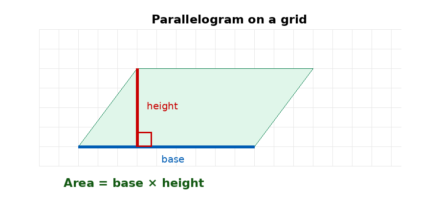
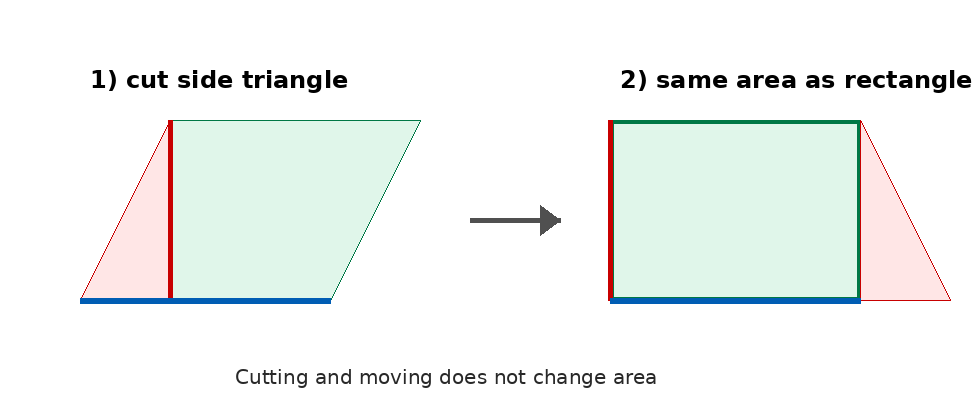
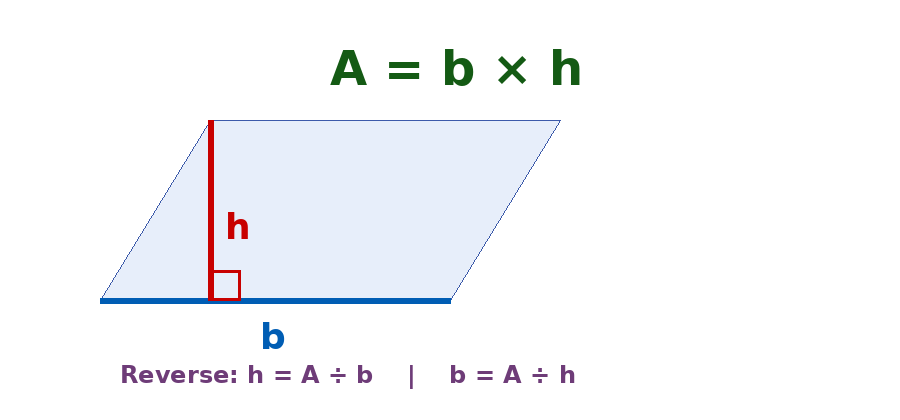

| البند | البيان | البند | البيان |
|---|---|---|---|
| المادة | الرياضيات | الصف | السادس الأساسي |
| الوحدة | السابعة: الهندسة | عنوان الدرس | مساحة متوازي الأضلاع |
| عدد الحصص المقترح | 4 حصص × 45 دقيقة | المجال | الهندسة والقياس |
| مكان التنفيذ | غرفة الصف/مختبر الحاسوب/اللوح الذكي | نوع التحضير | تحضير محوسب مع ورقة عمل تفاعلية |
| المعلم : زهدي زاهدة | التاريخ: ............ |
فكرة الدرس المركزية
يبني الدرس فهم مساحة متوازي الأضلاع من خلال الربط بينه وبين المستطيل: إذا قُصَّ مثلث من أحد جانبي متوازي الأضلاع ونُقل إلى الجانب الآخر، فإن الشكل الناتج مستطيل له القاعدة والارتفاع نفسيهما؛ لذلك تكون مساحة متوازي الأضلاع = طول القاعدة × الارتفاع. يركز الدرس على التمييز بين الارتفاع والضلع المائل، وعلى كتابة وحدة قياس مربعة.
 تقدير المساحة على شبكة مربعات |
 استنتاج القانون بالقص والنقل |
 القانون والعلاقة العكسية |
|---|
الأهداف التعليمية السلوكية
• أن يقدّر الطالب مساحة متوازي أضلاع مرسوم على شبكة مربعات بالوحدات المربعة.
• أن يستنتج الطالب قانون مساحة متوازي الأضلاع من تحويله عملياً أو رقمياً إلى مستطيل.
• أن يجد الطالب مساحة متوازي أضلاع معلوم فيه طول القاعدة والارتفاع.
• أن يجد الطالب طول القاعدة أو الارتفاع إذا عُلمت المساحة وأحد البعدين.
• أن يوظف الطالب قانون مساحة متوازي الأضلاع في حل مشكلة حياتية مع كتابة وحدة القياس المناسبة.
المفاهيم والمصطلحات والمهارات
| المحور | التفصيل |
|---|---|
| المفاهيم الجديدة/المؤكدة | مساحة متوازي الأضلاع، القاعدة، الارتفاع، وحدة مربعة، سم²، م². |
| التعلم القبلي | مفهوم المساحة، مساحة المستطيل، العد على شبكة مربعات، الارتفاع في متوازي الأضلاع. |
| المهارات الرياضية | الرسم الدقيق، القياس، العد على شبكة مربعات، التعويض في القانون، حل مسائل لفظية، تفسير الحل، كتابة وحدة القياس. |
| القيم والاتجاهات | الدقة في الرسم، التعاون في العمل الثنائي، احترام حلول الزملاء، ربط الهندسة بمواقف حياتية مثل تصميم الحدائق. |
نموذج التحضير وفق النمط المعتمد
| اليوم/التاريخ | الأهداف | المفاهيم الجديدة | التعلم القبلي | الأنشطة والتدريبات | التقويم | التغذية الراجعة |
|---|---|---|---|---|---|---|
| الحصة الأولى اليوم: ........ التاريخ: ........ |
أن يقدّر الطالب مساحة متوازي أضلاع مرسوم على شبكة مربعات، وأن يحدد القاعدة والارتفاع. | مساحة، وحدة مربعة، قاعدة، ارتفاع. | مفهوم المساحة، عدّ المربعات، تمييز متوازي الأضلاع. | تمهيد بصورة قطعة أرض على شكل متوازي أضلاع، ثم نشاط شبكة مربعات. يفتح الطلاب الورقة المحوسبة ويغيرون طول القاعدة والارتفاع والميل لملاحظة أثرهما. | سؤال سريع: متوازي أضلاع قاعدته 6 وحدات وارتفاعه 4 وحدات؛ قدّر مساحته. | إذا عَدّ الطالب المربعات المائلة ككاملة، يُوجَّه إلى مقارنة الشكل بمستطيل له القاعدة والارتفاع نفسيهما. |
| الحصة الثانية اليوم: ........ التاريخ: ........ |
أن يستنتج الطالب قانون مساحة متوازي الأضلاع من خلال نشاط عملي بالقص والنقل. | قانون المساحة، مستطيل مكافئ، قص ونقل. | مساحة المستطيل = الطول × العرض، والارتفاع هو البعد العمودي. | يرسم الطلاب الارتفاع على مقصوصة متوازي أضلاع، يلوّنون القاعدة والارتفاع، يقصون مثلثاً جانبياً وينقلونه لتكوين مستطيل. تستخدم الورقة المحوسبة زر التحويل لتثبيت الفكرة. | يكتب الطالب: لماذا مساحة متوازي الأضلاع تساوي مساحة المستطيل الناتج؟ | تعزيز الاستنتاج: لا تتغير المساحة بالقص والنقل؛ الطول الناتج يمثل القاعدة، والعرض يمثل الارتفاع. |
| الحصة الثالثة اليوم: ........ التاريخ: ........ |
أن يحسب الطالب مساحة متوازي أضلاع معلوم فيه طول القاعدة والارتفاع، مع كتابة وحدة المساحة. | قاعدة، ارتفاع، وحدة مربعة، تعويض في القانون. | الضرب، وحدات الطول والمساحة، اختيار القانون المناسب. | حل أمثلة مباشرة على القانون، ثم تدريبات فردية من الورقة المحوسبة مع تحقق فوري. يعمل الطلاب في أزواج لتفسير كل خطوة. | تذكرة خروج: احسب مساحة متوازي أضلاع قاعدته 12.4 سم وارتفاعه 2.5 سم. | عند استخدام الضلع المائل بدلاً من الارتفاع، يعاد إبراز أن الارتفاع عمودي على القاعدة أو امتدادها. |
| الحصة الرابعة اليوم: ........ التاريخ: ........ |
أن يوظف الطالب القانون لإيجاد الارتفاع أو القاعدة وحل مشكلات حياتية. | مسألة عكسية، مجهول، مساحة، قاعدة، ارتفاع. | القسمة كعملية عكسية للضرب، قراءة المسألة وتحديد المطلوب. | حل مسائل حياتية: أرض زراعية، خلية شمسية، شكل مساحته معلومة وقاعدته معلومة. يستخدم الطلاب الاختبار القصير في الورقة المحوسبة ثم يناقشون الحل. | تقويم ختامي: اختبار قصير من 5 فقرات + سؤال تبرير عن وحدة القياس. | تصحيح فردي: تحديد المعطيات أولاً، كتابة القانون، التعويض، ثم تحديد وحدة الناتج. |
خطة سير الحصص التفصيلية
| الحصة | محور الحصة | الإجراءات والزمن |
|---|---|---|
| الأولى | بناء المعنى من الشبكة | 5 د تمهيد: عرض صورة/قصة قطعة أرض. 10 د استكشاف: تحديد الشكل. 15 د نشاط شبكة مربعات: تقدير المساحة وتحديد القاعدة والارتفاع. 8 د استخدام الورقة المحوسبة. 7 د إغلاق. |
| الثانية | استنتاج القانون | 5 د مراجعة. 20 د نشاط عملي بالمقصوصات. 10 د مناقشة النتائج. 5 د صياغة القانون. 5 د تثبيت محوسب بزر التحويل إلى مستطيل. |
| الثالثة | تطبيق القانون | 5 د تهيئة. 15 د أمثلة موجهة. 10 د نشاط فردي. 10 د ورقة العمل المحوسبة: أسئلة تحقق فوري. 5 د تذكرة خروج. |
| الرابعة | التوظيف والتقويم | 5 د مراجعة القانون وعكسه. 15 د مسائل حياتية. 10 د تعلم تعاوني. 10 د اختبار قصير. 5 د تغذية راجعة وإغلاق. |
استراتيجيات التدريس والوسائل
| البند | التفصيل |
|---|---|
| استراتيجيات التدريس | الحوار والمناقشة، التعلم التعاوني، الاستقصاء، النشاط العملي بالمقصوصات، التعلم المحوسب، الحل الفردي. |
| الوسائل التعليمية | كتاب الطالب، السبورة، جهاز عرض/لوح ذكي، أجهزة حاسوب أو أجهزة لوحية، ورقة العمل المحوسبة، شبكة مربعات، مقصوصات، مسطرة، أقلام ملونة. |
| الربط الحياتي | حساب مساحة أرض للزراعة، خلية شمسية، تصميم حديقة أو أرضية، تحديد كمية مواد تغطي سطحاً على شكل متوازي أضلاع. |
الصعوبات والمفاهيم الخاطئة المتوقعة وإجراءات علاجها
| الصعوبة/الخطأ المفاهيمي | إجراء علاجي مقترح |
|---|---|
| استخدام طول الضلع المائل بدلاً من الارتفاع. | تلوين القاعدة بلون والارتفاع بلون آخر، ووضع علامة الزاوية القائمة، وتكرار أن الارتفاع مسافة عمودية بين القاعدتين. |
| اعتقاد أن المساحة تتغير إذا تغير ميل الشكل فقط. | استخدام منزلق الميل في الورقة المحوسبة مع تثبيت القاعدة والارتفاع؛ فيلاحظ الطالب ثبات المساحة. |
| الخلط بين وحدة الطول ووحدة المساحة. | تذكير دائم بأن القاعدة والارتفاع يقاسان بوحدة طول، أما الناتج فيكون بوحدة مربعة. |
| خطأ في إيجاد الارتفاع عند معرفة المساحة والقاعدة. | كتابة القانون أولاً: م = ق × ع، ثم تحديد المجهول، ثم استخدام ع = م ÷ ق. |
ورقة العمل المحوسبة المصاحبة
اسم الملف المرفق: ورقة_عمل_محوسبة_مساحة_متوازي_الأضلاع. html
| جزء الورقة المحوسبة | كيف يخدم هدف الدرس؟ | دور المعلم |
|---|---|---|
| استكشف بالشبكة | يغير الطالب طول القاعدة والارتفاع وميل الشكل في نموذج على شبكة مربعات، ثم يحسب المساحة ويتحقق فورياً. | يسأل: ماذا يمثل اللون الأزرق؟ وماذا يمثل اللون الأحمر؟ وهل تغير الميل يغير المساحة؟ |
| حوّل إلى مستطيل | يشاهد الطالب أن قص المثلث الجانبي ونقله يحول متوازي الأضلاع إلى مستطيل له القاعدة والارتفاع نفسيهما. | يقود النقاش إلى أن المساحة محفوظة، وأن المستطيل الناتج يشترك مع المتوازي في القاعدة والارتفاع. |
| تدرب وتحقق | أسئلة مباشرة وعكسية: إيجاد المساحة، إيجاد الارتفاع، اختيار وحدة القياس الصحيحة. | يتابع كتابة القانون والتعويض ووحدة القياس. |
| تحدي ختامي | اختبار قصير يعطي الطالب درجة فورية ورسالة تغذية راجعة وفق عدد الإجابات الصحيحة. | يوجه الطلبة إلى مراجعة أخطائهم وتحليل سبب الخطأ. |
أدوات التقويم
| نوع التقويم | الأداة/الإجراء |
|---|---|
| تقويم قبلي | أسئلة شفوية عن معنى المساحة ومساحة المستطيل والارتفاع في متوازي الأضلاع. |
| تقويم تكويني | ملاحظة أداء الطلبة في نشاط القص والنقل، تصحيح فوري في الورقة المحوسبة، أسئلة قصيرة أثناء الحل. |
| تقويم ختامي | تذكرة خروج ومسألة حياتية قصيرة، وسلّم تقدير عددي للأهداف الجزئية. |
| تقويم بديل | تصميم مخطط صغير لمتوازي أضلاع وتحديد قاعدته وارتفاعه ومساحته. |
ورقة عمل ورقية مرافقة
تعليمات للطالب: حدّد القاعدة والارتفاع أولاً، ثم اكتب القانون، ثم عوّض، ولا تنس وحدة القياس المناسبة.
| رقم السؤال | السؤال |
|---|---|
| 1 | أكمل: مساحة متوازي الأضلاع = |
| 2 | متوازي أضلاع مرسوم على شبكة مربعات، طول قاعدته 9 وحدات وارتفاعه 5 وحدات. أوجد مساحته. |
| 3 | أوجد مساحة متوازي أضلاع طول قاعدته 12.4 سم وارتفاعه 2.5 سم. |
| 4 | خلية شمسية على شكل متوازي أضلاع طول قاعدتها 2.5 م، ويزيد هذا الطول عن ارتفاعها بمقدار 1.5 م. أوجد مساحتها. |
| 5 | متوازي أضلاع مساحته 48 سم² وطول قاعدته 8 سم. أوجد ارتفاعه. |
| 6 | متوازي أضلاع مساحته تساوي مساحة مستطيل طوله 10 سم وعرضه 6 سم، وطول قاعدة المتوازي 12 سم. أوجد ارتفاع المتوازي. |
| 7 | اختر الوحدة الصحيحة لمساحة أرض: م، م²، سم. ثم برّر اختيارك. |
| 8 | قطعة أرض على شكل متوازي أضلاع طول قاعدتها 40 م وارتفاعها 15 م، زُرعت بمعدل شجرتين في كل متر مربع. احسب عدد الشجرات. |
إجابات ورقة العمل
| السؤال | الإجابة النموذجية |
|---|---|
| 1 | طول القاعدة × الارتفاع. |
| 2 | 9 × 5 = 45 وحدة مربعة. |
| 3 | 12.4 × 2.5 = 31 سم². |
| 4 | الارتفاع = 2.5 - 1.5 = 1 م؛ المساحة = 2.5 × 1 = 2.5 م². |
| 5 | 48 = 8 × ع، إذن ع = 48 ÷ 8 = 6 سم. |
| 6 | مساحة المستطيل = 10 × 6 = 60 سم²؛ ارتفاع المتوازي = 60 ÷ 12 = 5 سم. |
| 7 | م² لأنها وحدة مساحة. |
| 8 | المساحة = 40 × 15 = 600 م²؛ عدد الشجرات = 600 × 2 = 1200 شجرة. |
نشاط إثرائي وتكليف بيتي
• نشاط إثرائي: متوازي أضلاع مساحته 96 سم²، وقاعدته تزيد 4 سم على ارتفاعه. جرّب قيماً مناسبة لإيجاد القاعدة والارتفاع.
• تكليف بيتي: ارسم على شبكة مربعات متوازيي أضلاع مختلفين في الميل ولهما القاعدة والارتفاع نفسيهما، ثم احسب مساحتيهما وفسر النتيجة.